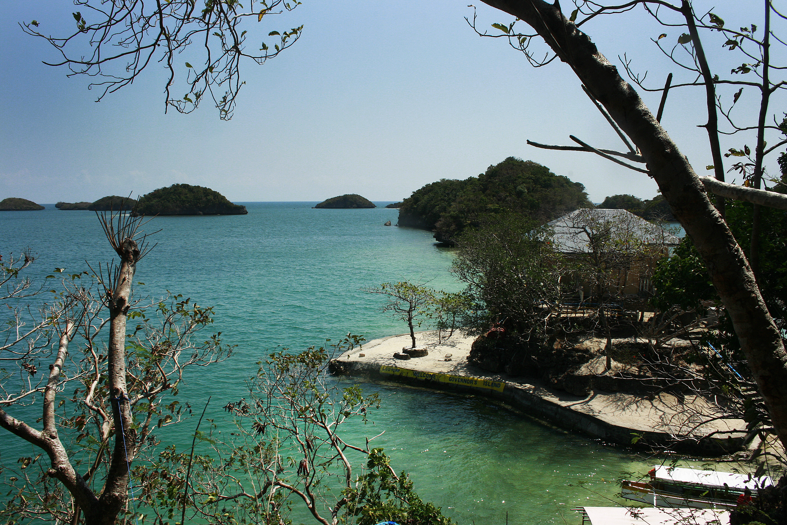
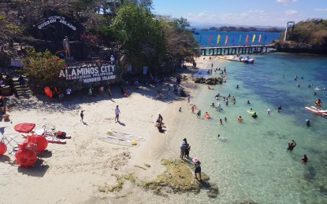

Hundred Islands National Park is a protected group of small limestone islands and islets located in the Lingayen Gulf, off the coast of Alaminos, Pangasinan, Philippines. It is one of the country’s oldest national parks and a major ecotourism destination, known for its striking marine landscapes, coral gardens, and recreational activities.
Hundred Islands National Park is composed of ancient coral formations that rose from the sea millions of years ago. The 124 islands scatter across an 18-square-kilometer area of clear, turquoise waters, each varying in size and shape. Visitors will notice limestone cliffs, small caves, and white-sand beaches that shift subtly with the tides, creating a dynamic coastal landscape.
The islands’ unique formations provide both a scenic backdrop and natural habitats for various species. From elevated viewing points, visitors can appreciate the panorama of clustered islets surrounded by sparkling waters, highlighting the park’s geological richness.
Some islands remain largely untouched, giving a glimpse into pristine ecosystems while offering opportunities for adventure, such as trekking, cliff diving, or exploring hidden caves. The combination of natural beauty and rugged terrain makes the park an enduring attraction for nature lovers and photographers alike.

The park supports diverse ecosystems, from coral reefs and seagrass beds to mangrove forests along its shores. These habitats shelter marine life such as giant clams, reef fish, and sea turtles, making it a hotspot for ecological research and wildlife observation.
Conservation efforts are ongoing to ensure tourism does not disrupt fragile habitats. Programs include regulating visitor activities, protecting coral reefs, and engaging local communities in sustainable practices, balancing economic benefits with environmental stewardship.
Hundred Islands’ natural environment also offers educational value, allowing visitors to learn about coastal ecosystems and the importance of biodiversity. By combining recreation with awareness, the park promotes a deeper understanding of the Philippines’ ecological heritage.

The park’s most popular islands—Governor, Quezon, Marcos, and Children’s Islands—feature a mix of natural and recreational attractions. Visitors can swim, snorkel, kayak, and cliff dive, while some islands provide picnic areas, caves, and viewing decks for scenic appreciation.
Motorized boats from Alaminos Wharf make island hopping accessible, letting tourists explore multiple islands in a single day. Each island offers a distinct experience, from quiet beaches to adventurous cliff edges, catering to families, adventure seekers, and photographers.
Events and guided tours also highlight the park’s cultural and historical elements. The combination of natural beauty and recreational facilities makes Hundred Islands a top ecotourism destination in the region.

Hundred Islands is more than a natural wonder—it sustains local communities by providing livelihoods through tourism services, boat rentals, and hospitality. Small businesses benefit directly from visitors, creating an economic lifeline while encouraging stewardship of the environment.
The park is also a symbol of Pangasinan’s rich natural heritage, drawing attention to the region’s ecological and cultural identity. Educational programs and eco-tours help foster a sense of responsibility among tourists and locals alike.
Through sustainable practices, the park demonstrates a model for balancing economic growth with environmental protection, ensuring that future generations can continue to enjoy its scenic islands and vibrant marine ecosystems.